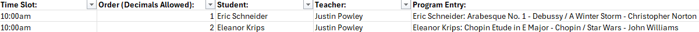

Project Showcase: Classic Studios
Classic Studios has consented to the posting and presentation of project files for the purposes of developing new professional connections and demonstrating subject matter expertise.
Having met many other finance and analytics professionals, both aspiring and established, I can comfortably say I have a career path in the field which is one of a kind. Prior to the finance degree and the internships, I was a piano teacher for over half a decade. They say music and math go hand in hand. Perhaps some of the logic between the two are the same. Perhaps it’s the demands of processing lots of information at the same time. Regardless, the transition between fields went about as good as I could hope for. Using my existing relationships with music schools, I developed tools to automate and integrate some of their processes.
Project Summary
The project files can be viewed here. They require the R executable to be installed in its default location and for all dependencies to be installed.
The goal of this project was to take an existing process, in this case scheduling concerts and recitals, and automate aspects of it to decrease the turnaround time on scheduling and reduce the chance of human error. We chose this as a starting point since it bottlenecks available human resources at certain times of the year, greatly decreasing quality in other functions of the business. There were three major considerations I had to factor in when completing this project:
- Music teachers rarely have technical skills. The ones that do eventually transition to higher impact careers.
- The tools must integrate into the existing tech stack. Investing in different tools should be justified given the business's current level of volume.
- The importance of budget outweighs the importance of features. Not every feature must make the final product, and the stability of core features should be prioritized over having many features.
Automating the recital programming involved integrating form output from a CRM called Activity Messenger with an Excel template. Due to the non-XML format of the input data, RegEx is used heavily to isolate keyed information, which is then imported into a user-friendly template. The user can then schedule events using the template. Once complete, they can run a second script which gives them event programs, stagehand tech sheets, confirmation notices for staff, and additional program notes for the MC.
Why Scripts are Necessary
See below an example of a single teacher’s recital program entry:
1: First Name: Eric, Last Name: Schneider, Positive Comment / Award: Best Sight Reading, Song1 Title: Arabesque No. 1, Song1 Length (minutes): 3, Song1 Composer/Arr.: Debussy, Song1 Staging/Instruments: Piano Solo, Song2 Title: A Winter Storm, Song2 Length (minutes): 2, Song2 Composer/Arr.: Christopher Norton, Song2 Staging/Instruments: Piano Solo, 2: First Name: Eleanor, Last Name: Krips, Positive Comment / Award: Plays by Ear, Song1 Title: Chopin Etude in E Major, Song1 Length (minutes): 3, Song1 Composer/Arr.: Chopin, Song1 Staging/Instruments: Piano Solo, Song2 Title: Star Wars, Song2 Length (minutes): 1, Song2 Composer/Arr.: John Williams, Song2 Staging/Instruments: Piano Duet
Note the above entry contains only 2 performers. The average teacher may submit up to 20 students and the studio averages about 10 teachers. Keeping in mind the lack of technical expertise in the organization, this could take several hours and would be prone to human error.
Extracting Information
The information above is semi-structured. If it contains multiple rows, each row will be identified by a unique number followed by a colon. This does not mean that the user can not produce entries with a similar format, and therefor the table syntax is difficult to work with to identify keyed information consistently in all cases. I recommend anyone with familiarity in RegEx check the project files (Initial_Parser.R) to see how this was handled. In this case, we first idenitfy locations to insert a unique delimiter, before separating, to prevent information loss from when delimiters and patterns are removed. Using lookaheads and lookbehinds we can isolate information contained between the various tags:
This is then pulled into the scheduling template, where times and orders can be decided immediately:
This is then ready to be separated into template documents and all relevant materials. Note the use of Excel is typically avoided in analytics. It’s intentionally used here to remain accessible to the target audience.
Scheduling and Making Changes
The client can then make changes to the schedule using Excel, which is a tool they are familiar with which doesn't require furher technical training. The tools built on top of this template allow changes to be pushed forward to documents downstream, making it a central record for all program updates and scheduling changes. This addresses of the biggest time losses in their former process. Previously, late changes required updates in up to 6 different locations, making updates both more error prone and costly. Integrating the master template with downstream documents allows greater flexibility to make adjustments at any point and provides more leniency to the volume of changes that can be made. This benefits both the administrative staff at Classic Studios, who can now handle larger volumes more effectively, as well as studio clients, who can now reliably have their adjustments be accomodated more flexibly due to the lower time constraint.
Improving Maintainability
To improve the longevity of the code, standlone functions for parsing multiine tables from AM were developed, allowing for easier configuration to new forms. This then becomes a resuable toolkit for the business to be able to parse multiline forms effectively when using the format again in the future. Functional programming is important since it greatly improves code flexibility in the future. Slightly longer development times up front mean reduced development times going forward, and allow updates to be made easier when systems change and begin interfacing in new ways.
The Impact
This workflow reduced recital scheduling times by 75% or more. The previous process prevented changes in the original data being propagated to linked documents, requiring manually changing the same entry in 4-10 places when revisions were required. By automatically pushing changes to linked documents, this speeds up both the creation and revision stage significantly. The use of a pre-structured Excel template and explicit SOP limit the chance of human error significantly. A key takeaway is that not all code needs to be excessively long to have a significant impact. A short 100 line script in this case saves many hours and greatly improves the quality of the related services.
Next Steps
Automatic rendering to key documents (programs, printouts, tech sheets) has been completed as of early July. The final step is to install the software on the clients machine, and to present training materials to the staff.